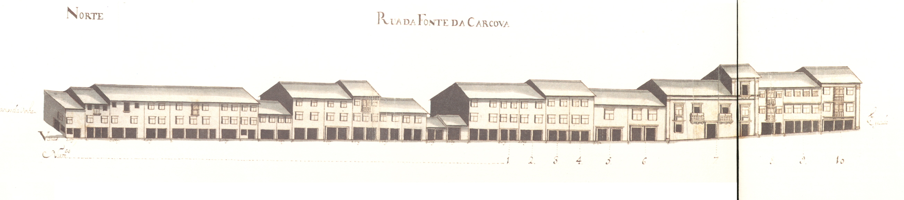

Rua da Fonte da Carcova (Página 44)

Rua da Fonte da Carcova- Norte. Rua da Fonte da Carcova- Sul Informações sobre a rua:
A sua fundação, remontará talvez aos inícios do séc. XVI. Marginando a muralha
medieval, fazia ligação entre os dois novos e amplos campos então abertos, de "Santa Ana"
e da "Vinha".
No seu extremo Este existia, desde a Idade Média, uma fonte, conhecida pela "Fonte da
Cárcova ou Cárcoda".
Embora a sua ocupação se tenha iniciado de imediato (p.ex. o prazo do Cabido
mais antigo nesta rua data de 1531), ee incidiu apenas sobre o lado Norte, porque no mapa
de Braunio não se vê ainda nenhuma construção encostada à muralha.
Em 1750 mostrava bem a razão por que foi denominada, em data que desconehcemos,
de "rua dos Mercadores": o rés-do-chão era totalmente ocupado com largas portas de madeira
que durante o dia se abriam para afzer o comércio.
De resto é predominantemente ocupada com prédios de 3 andares, e janelas bracarenses, e poucas varandas
e gelosias. Diferentes são apenas os prazos 5, 6 e sobretudo o 7, onde se vê uma construção setecentista
já de certa dimensão, com duas varandas, «molduras» de pedra nas aberturas e, sobretudo, um dos vãos
extremos da casa tem mais um piso, reminiscência talvez de opções estilísticas mais arcaicas.
Das 27 casas aqui desenhadas e que correspondem apenas ao lado Norte da rua, 10 eram prazos do
Cabido.
Desde 1865 que passou a ser oficialmente denominada de "rua dos Capelistas".
Aberta em data desconhecida. No Tombo do Cabido (cª 1369-80), já figura este
topónimo.
Estabelecida a ligação entre o "largo dos Penedos" e os espaços onde bastante
mais tarde, nos meados do séc. XVII, se construiu a igreja e convento do Carmo.
Em 1750, era uma rua que alternava, um pouco a esmo, casas de 1, 2 ou 3 pisos,
de bom ou mau desenho, de famílias pobres ou ricas, numa indefinição absoluta: vêem-se aqui
casas grandes, com bom trabalho de pedra e casas do tipo de porta com janela ao lado, no piso
térreo. Só com uma leitura dos prazos se poderá definir o tipo de vivência que nela se fazia,
o que nos parece poder dar resultados muitíssimo interessantes.
Das 27 casas aqui desenhadas e que correspondem apenas ao lado Sul da rua, 18 eram prazos
do Cabido.
Mantém o nome de "rua do Carvalhal".
Casas
| Descrição |
|
1 -
Norte
Enfiteuta: Os herdeiros de Gregório João, tratantem casado com Maria Veloso
Foro: 25 reis e 1 galinha
Confronta, do poente, com cada foreira à capela de Sta. Marta.
|
| |
2 -
Norte
Enfiteuta: António Francisco
Foro: 30 reis e 1 galinha
A casa n.º2 esteve unida ao n.º1 entre os anos de 1608 e 1690.
|
| |
3 -
Norte
Enfiteuta: António Francisco
Foro: 20 reis e 2 galinhas
A casa n.º2 esteve unida ao n.º1 entre os anos de 1608 e 1690.
|
| |
4 -
Norte
Enfiteuta: António Francisco
Foro: 50 reis
A casa n.º2 esteve unida ao n.º1 entre os anos de 1608 e 1690.
|
| |
5 e 6 -
Norte
Enfiteuta: Sebastião Luís de Faria
Foro: 50 reis e 1 galinha
Os n.º5 e 6 encontram-se unidos desde o ano de 1541.
|
| |
7 -
Norte
Enfiteuta: Sebastião Luís de Faria
Foro: 30 reis e 1 galinha
Os n.º5 e 6 encontram-se unidos desde o ano de 1541.
|
| |
8 -
Norte
Enfiteuta: Ana Maria de Carvalho
Foro: 20 reis e 1 galinha
Esteve unida ao n.º9 entre os anos de 1531 e 1625.
|
| |
9 -
Norte
Enfiteuta: João Martins Teixeira, mercador, casado com Ana Maria da Silva
Foro: 10 reis e 1 galinha
|
| |
10 -
Norte
Enfiteuta: Manuel Marques Pereira
Foro: 10 reis e 1 galinha
O enfiteuta foi herdeiro de Brígida Marques,
casada com Manuel da Costa, marceneiro.
Esteve unida ao n.º8 entre os anos de 1531 e 1617.
Confronta, do nascente, com o "Eirado".
|
|
Casas
| Descrição |
|
1 -
Sul
Pertence à casa n.º24 da "Rua dos Chãos de Baixo", para onde tem
a frontaria e serventia principais.
|
| |
2 -
Sul
Enfiteuta: D.Mónica Isabel de Brito e Távora, de Vila do Conde, assistente em Lisboa.
Pedro Sepúlvedra, casado com
Ângela das Neves, paga 72 reis ao n.º18.
|
| |
3 -
Sul
Enfiteuta: D.Mónica Isabel de Brito e Távora, de Vila do Conde, assistente em Lisboa.
José Francisco, lavrador da
"Freguesia de Sta. Lucrécia", casado com Maria Lopes,
paga 72 reis ao n.º18.
|
| |
4 -
Sul
Enfiteuta: D.Mónica Isabel de Brito e Távora, de Vila do Conde, assistente em Lisboa.
João da Costa, casado com
Teresa Ferreira, paga 117 reis ao n.º18.
|
| |
5 -
Sul
Enfiteuta: D.Mónica Isabel de Brito e Távora, de Vila do Conde, assistente em Lisboa.
Francisco Dantas, escrivão dos direitos reais,
casado com Grácia Maria de São Boaventura, paga 504 reis ao n.º18.
|
| |
6 a 9 -
Sul
Enfiteuta: D.Mónica Isabel de Brito e Távora, de Vila do Conde, assistente em Lisboa.
O Padre Manuel Álvares paga 1184 reis
e 2 galinhas ao n.º18.
|
| |
10 -
Sul
Enfiteuta: Os herdeiros de Francisco João, sapateiro, casado com Ana Dias.
Foro: 588 reis e 1 galinha
|
| |
11 -
Sul
Enfiteuta: D.Mónica Isabel de Brito e Távora, de Vila do Conde, assistente em Lisboa.
Crispiana Soares, solteira,
paga 592 reis e 1 galinha ao n.º18.
|
| |
12 -
Sul
Enfiteuta: D.Mónica Isabel de Brito e Távora, de Vila do Conde, assistente em Lisboa.
Manuel Falcão Cotta, fidalgo da casa de sua
Magestade, paga 1185 reis e 2 galinhas ao n.º10; e, por um pedaço de quintal (que se
desmembrou do n.º8 da "Rua dos Chãos de Baixo"), paga 1 alqueire de pão
meado e meia galinha.
|
| |
13 e 14 -
Sul
Enfiteuta: D.Mónica Isabel de Brito e Távora, de Vila do Conde, assistente em Lisboa.
Francisco de Meira Carrilho, cónegro
de "Braga", paga 820 reis e 1 galinha ao n.º18.
|
| |
15 e 17 -
Sul
Enfiteuta: D.Mónica Isabel de Brito e Távora, de Vila do Conde, assistente em Lisboa.
Pertencem ao enfiteuta da casa n.º18.
|
| |
16 -
Sul
Enfiteuta: D.Mónica Isabel de Brito e Távora, de Vila do Conde, assistente em Lisboa.
Crispim da Silva,surrador, paga 264 reis ao n.º18.
|
| |
18 -
Sul
Enfiteuta: D.Mónica Isabel de Brito e Távora, de Vila do Conde, assistente em Lisboa.
Foro: 800 reis, 3 galinhas e 1 capão
Denominado «Casal de Portas». Foi subemprazado, no ano de 1736, a
Ursula Josefa de Araújo, viúva do Lic.
Manuel da Costa Maia, pelo foro 2.513 reis, e
750 reis e 2 galinhas. A este prazo pertencem os n.º15 e 17, bem como uma devesa no
"monte de Castro", junto a "S. Lourenço", e os foros das casas
que lhe andam subenfiteuticadas nesta "Rua do Carvalhal", desde os n.º 1 a
14 e 16 e, na "Rua dos Chãos de Baixo", os n.º12 e 24.
Confronta, do poente, com casas foreiras a António Barreto de Meneses.
|
|